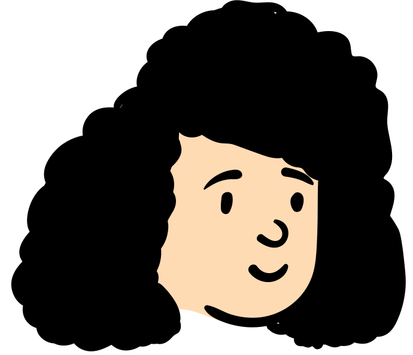

Sun Devil Sync: Connecting Students to Campus
A research-driven redesign to drive student engagement and campus participation.
The problem
A campus hub that wasn't working for its campus.
Sun Devil Sync is ASU's central platform for student organizations and campus events — designed for students, faculty, and staff. But despite its purpose, students were struggling to find events, navigate the interface, and feel any connection to what was happening on campus. I set out to find out why, and redesign it.
Research methods
Understanding the problem before solving it.
Before touching a single design decision, I needed to understand how real users experienced Sun Devil Sync. I used three methods to build a complete picture.
Surveys
Distributed via Google Forms to collect quantitative data on how students were using Sun Devil Sync and what frustrated them most. 24 participants responded.
Usability Testing
Conducted moderated usability tests with 4 participants to observe real behavior on the platform and uncover pain points that surveys alone could not capture.
Heuristic Evaluation
Evaluated the existing interface against Nielsen's 10 usability heuristics to identify structural and visual issues before talking to any users.
Key findings
What the research revealed.
The design felt dated and untrustworthy
Users repeatedly described the interface as outdated, which made them less likely to trust the information on it. Outdated photos, inconsistent branding, and cluttered layouts all contributed.
Information was hard to find
Navigation labels were confusing and users could not quickly find events relevant to them. The search and filter system was too broad to be useful.
Users wanted personalization
Both survey and usability test participants asked for the ability to follow clubs, save events, and have a homepage that reflected their interests.
Mobile experience was frustrating
Several participants noted the mobile version was particularly difficult to use, with slow load times and a layout that did not adapt well to smaller screens.
User personas
Who we were designing for.
Alex is a dedicated ASU staff member and graduate student passionate about building a strong campus community. He uses Sun Devil Sync to manage his department's student organization page and post updates for students.
Goals
- Manage his club's student organization page and post updates, tasks, and events
- Use Sun Devil Sync as a central hub to organize and promote events that bring staff and students together
Pain Points
- The website is visually outdated and has limited customization options
- The mobile version is frustratingly difficult to use
- Wishes there were better tools for managing club communications and scheduling
Desired Features
- A following feature to easily keep track of clubs
- Quick access to events in his calendar with Google Calendar sync
- Improved search filters to find specific types of events and clubs

Maya Flores ASU Student and Student WorkerMaya is a 19-year-old sophomore at ASU. She uses Sun Devil Sync to discover clubs and events that align with her interests, particularly cultural and fitness-based groups.
Goals
- Find and join student clubs that match her interests, especially cultural and fitness groups
- Stay informed about ASU events and meet new people on campus
Pain Points
- Frustrated by the lack of customization which makes it difficult to personalize her experience
- Finds it hard to locate information quickly due to the disorganized layout and slow loading times on mobile
- Wishes for a cleaner design that feels more like the modern apps she uses
Desired Features
- A following feature to easily keep track of clubs she is interested in
- Quick access to events in her calendar with options to sync to Google Calendar
- Improved search filters to find specific types of events and clubs
Heuristic evaluation
What was already broken.
Before conducting user research I evaluated the existing Sun Devil Sync interface against Nielsen's 10 usability heuristics. Here is what I found across the two most-used pages.
Homepage
- Outdated content and photos
- Lacks ASU branding
- Insufficient welcome blurb
Events Page
- No clear exits
- Lacks ASU branding
- Outdated design
Survey takeaways
What 24 students told us.
Issues with Sun Devil Sync
- Lack of customization
- Filters are non-specific
- Dated website
- Website is not visually appealing
- Disorganized and difficult to find information
Helpful features users wanted
- Customization options
- A following feature for orgs and clubs
- Recommended events
- ASU branding and calendar feature
- Ability to add events to other calendars
- Finding events with food
- Quick tabs to get to events
Usability test takeaways
What we watched 4 users do.
After observing participants navigate Sun Devil Sync, these were the concrete changes identified.
The redesign
Two screens. Informed by everything.
Using the research insights and usability test findings, I redesigned the homepage and events page of Sun Devil Sync. Explore the mockups below.
Homepage Redesign
Scroll to exploreEvents Page Redesign
Scroll to exploreReflection
What I learned.
This project taught me that research is not just about collecting data — it is about listening for patterns. When 24 survey participants and 4 usability test participants all pointed to the same frustrations, the solution became clear: users did not need a completely new product. They needed the existing one to actually work for them.
I also learned how much trust visual design carries. The outdated aesthetic of Sun Devil Sync was not just a cosmetic issue — it was actively making users doubt the accuracy of the information on the page. Modernizing the design was as much a trust decision as an aesthetic one.
What worked
Combining quantitative surveys with qualitative usability testing gave me a much fuller picture than either method alone would have.
What I would do differently
I would conduct more usability tests with a wider range of participants, test the redesigned screens with users to validate the changes, and prototype the designs in Figma to allow for clickable user testing rather than static mockups.
What is next
With more time I would redesign the mobile experience, which was the most consistent pain point across all research methods.